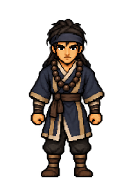
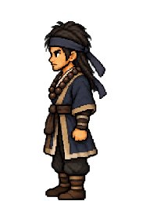
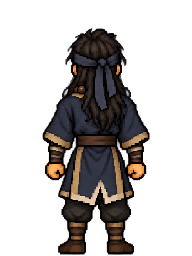

Game-background preview and character selectorWu Song · Pilgrim
Standing design review: clean-shaven square jaw, long black hair, slate headband, indigo pilgrim robes and wooden prayer beads. Front, left and back share the same proportions and palette. Walking and the right view follow design approval.

Front
Left
Back192 × 256 frames at the same 24 × 32 world size. Original colours preserved, no palette reduction.
Native source turnaround